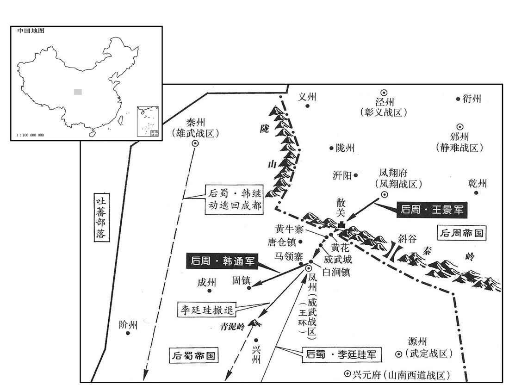

公元955年资治通鉴：本年记事、原文与白话对照
按原书编年位置阅读；追叙和史论不等于本年发生的事件。白话采用所据译本，缺译不以生成译文补齐。
卷292 · 本年记事
公元955年 · 后周世宗睿武孝文皇帝显德二年
显德二年〔（乙卯、九五五）〕
上传原文的注释括号有异常，字符原样保留；无法可靠划分的段落默认全文显示。
本年事件索引（现代整理）
- 后周规定漕运官员每运一斛可领取一斗耗粮
- 后周斥责李彝兴阻挠与府州往来，李彝兴惶恐谢罪
- 后蜀在凤州设置威武军
- 后周规定举荐县令录事的官员须对其任职表现连带负责
- 后周疏浚胡卢河并筑城驻军抵御契丹，张藏英招募边兵大破契丹
- 后周发生日食
- 后蜀夔恭孝王孟仁毅去世
- 后周世宗下诏群臣尽言得失并说明将据言行考察任用
- 南唐任严续为门下侍郎同平章事
- 后周在李晏口设置静安军
- 后周世宗决心削平天下并采纳秦州人恢复旧疆的建议
- 后蜀派赵季札巡视边防，赵季札自荐后任雄武监军
- 后周世宗下令扩建大梁外城并规划街道仓廨
- 后蜀命王昭远巡视北边城寨与甲兵
- 后周世宗命近臣撰写治国与开边策论
- 王朴提出整顿政治民生后逐步兼并吴蜀幽并的策略
- 王朴建议先扰乱南唐边境并乘虚夺取江北诸州
- 后周世宗采纳王朴建议并任其知开封府事
- 后周世宗命向训等领兵攻取秦州凤州
- 后周禁止未经敕额的寺院并整顿僧尼出家制度
- 后周王景攻取黄牛等八寨，后蜀部署援军迎战
- 赵季札闻后周入境后逃回成都，被孟昶处死
- 后周世宗亲自审录囚犯，为冤死者平反
- 后周西征军在天威武城与后蜀交战失利
- 后周任韩通为西南行营马步军都虞候
- 南汉主杀死通王刘弘政，刘氏诸王至此几乎被杀尽
- 后周任张美为右领军大将军并权点检三司
- 后周任王景为西南行营都招讨使继续进攻秦凤
- 景范因父丧罢政事
- 后周军击败后蜀军并俘获三百将士
- 后周下令收集民间铜器铸钱并限期输官
- 司马光称后周世宗爱民而明察，不因毁佛耽误利民之事
- 后周王景击败后蜀援军并收复秦州成州阶州
- 后周世宗称赞王溥择将有功
- 后周世宗感念民间困苦并表示将亲冒矢石为民除害
- 后蜀李廷珪上表待罪，伊审征也入朝请罪
- 后蜀主请求与后周议和却自称皇帝，孟昶加紧备战并铸铁钱
- 南唐主李璟骄纵用人并谋联合契丹北汉对付后周
- 南唐停止冬季淮河驻军，后周任李谷等率军伐唐
- 后周疏浚汴水故道以改善泗上漕运
- 后周世宗表示不会因怒杀人或因喜赏人
- 后周下令整修大梁街道拓宽街衢
- 后周围攻凤州并攻克城池，俘获后蜀守将王环等五千人
- 南唐刘仁赡镇守寿州并部署防御，南唐主派刘彦贞率军救援
- 李谷等在正阳架设浮桥渡淮并连胜南唐军
- 后周枢密使郑仁诲去世，世宗亲往吊唁
- 吴越王钱弘俶遣使入贡，后周世宗劝其出兵攻唐

本年形势与背景参考图
春，正月，庚辰，上以漕运自晋、汉以来不给斗耗，纲吏多以亏久抵死，诏自今每斛给耗一斗。
>[1]>春季，正月，庚辰（初十），后周世宗>因为漕运自从后晋>、后汉>以来不给“斗耗”，负责运送的官吏不少因为损耗造成粮食亏欠而抵死罪，下诏命令从今开始每斛粮食给损耗一斗。
定难节度使李彝兴〔李彝兴，即彝殷也，避宋朝宣祖庙讳，始改名彝兴。史以后来所更名书之。难，乃旦翻。〕以折德扆亦为节度使，与己并列，耻之，〔夏州自唐以来，为缘边大镇，李氏又世袭节度使。府州，汉氏方置节镇，折氏父子又晚出，故耻与并列。〕塞路不通周使。〔塞，悉则翻。〕癸未，上谋于宰相，对曰：「夏州边镇，朝廷自来每加优借，府州褊小，得失不系重轻，且宜抚谕彝兴，庶全大体。」上曰：「德扆数年以来，尽忠刃力以拒刘氏，柰何一旦弃之！且夏州惟产羊马，贸易百货，悉仰中国，〔贸，音茂。仰，牛向翻。〕我若绝之，彼何能为！」乃遣供奉官齐藏珍赍诏书责之，〔风俗通云：凡氏之兴九事，氏于国者，齐、鲁、宋、卫是也。余按左传卫有大夫齐氏，此岂氏于国乎﹖〕彝兴惶恐谢罪。
>[2]>定难节度使>李彝兴因为折德也当了节度使>，与自己地位相同，感到羞耻，便阻塞道路不与后周>互通使者。癸未（十三日），后周世宗>与宰相>商量，宰相>回答说：“夏州>是边关重镇，朝廷历来格外从宽优待，府州地方偏僻狭小，利害得失不关轻重，暂且应该安抚李彝兴，可以保全大局。”世宗说：“折德多年以来，尽忠报国努力作战来抵御北汉>刘氏，怎么能一下子抛充他！况且夏州>只出产羊马，交易其他百货，全部仰仗中原，我若断绝关系，他还能有什么作为！”于是派遣供奉>官齐藏珍带着诏书责问李彝兴，李彝兴惊惶恐惧连忙认罪道歉。
戊子，蜀置威武军于凤州。
>[3]>戊子（十八日），后蜀>在凤州设置威武军。
辛卯，初令翰林学士、两省官举令、录；除官之日，仍署举者姓名，若贪秽败官，并当连坐。〔败补迈翻。〕
>[4]>辛卯（二十一日），后周>开始命令翰林学士>、门下和中书两省官员荐举县令、录事参军人选。授官之日，同时记下荐举人>的姓名，倘若被荐人贪婪污秽败坏公务，荐举人>一并连同坐罪。
契丹自晋、汉以来屡寇河北，轻骑深入，无藩篱之限，郊野之民每困杀掠。言事者称深、冀之间有胡卢河，横亘数百里，可浚之以限其奔突；〔胡卢河，俗谓之葫芦河，即衡漳水，在东光县西三十里。〕是月，诏忠武节度使王彦超、彰信节度使韩通〔周改曹州威信军为彰信军，避太祖讳也。〕将兵夫浚胡卢河，筑城于李晏口，留兵戍之。〔冀州蓨县东北有李晏镇，时筑城屯军，以为静安军。按薛史，其军南距冀州百里，北距深州三十里，夹胡卢河为垒。将即亮翻。〕帝召德州刺史张藏英，问以备边之策，藏英具陈地形要害，请列置戍兵，募边人骁勇者，厚其禀给，自请将之，随便宜讨击；帝皆从之，以藏英为沿边巡检招收都指挥使。藏英到官数月，募得千余人。王彦超等行视役者，〔行，下孟翻。尝为契丹所围；藏英引所募兵驰击，大破之。自是契丹不敢涉胡卢河，河南之民始得休息。〔此河南，谓胡卢河之南也。〕
>[5]>契丹自从后晋>、后汉>以来，频繁侵犯河北地区，轻骑兵长驱直入，没有任何屏障的阻隔，郊区野外的农民经常陷入烧杀抢掠的困境。向朝廷陈述政见的人称说深州、冀州之间有胡卢河，绵延横亘几百里，可以疏通河道来阻截契丹骑兵的横冲直撞。当月，绍令忠武节度使王彦>超、彰信节度使>韩通率领士兵、民夫疏通胡卢河，在李晏口筑城，留驻军队守卫。后周世宗>召见德州刺史>张藏英，询问边疆防备的对策，张藏英具体陈说地理形势、军事要塞，请求部署戍边军队，招募边疆百姓中矫健勇猛的，多给军饷，自己请求率领他们，随时根据情况征讨攻击契丹骑兵；世宗全都同意，任命张藏英为沿边巡检>招收都指挥使>。张藏英赴任几个月，招募到一千多人。王彦>超等巡视疏通河道的工程，曾经被契丹军队所包围；张藏英带领所招募的士兵驰马出击，大败敌军。从此契丹军队不敢再过胡卢河，胡卢河以南的百姓开始得到休养生息。
二月，庚子朔，日有食之。
>[6]>二月，庚子朔（初一），出现日食。
蜀夔恭孝王仁毅卒。〔仁毅，蜀主之弟也。〕
>[7]后蜀>夔恭孝王孟仁毅去世。
壬戌，诏群臣极言得失，其略曰：「朕于卿大夫才不能尽知，面不能尽识；若不采其言而观其行，〔行，下孟翻。〕燔其意而察其忠，则何以见器略庂浅深，知任用之当否！〔当，丁浪翻。〕若言之不入，罪实在予；苟求之不言，咎将谁执！」
>[8]>壬戌（二十三日），后周世宗>诏令群臣畅所欲言陈述政事的得失利弊，诏书大致说：“朕对各位卿大夫>，才能没法全部知道，面孔没法全都认识。倘若不采集他们的言论从而观察他们的行为，明悉他们的意见从而考察他们的忠诚，那凭什么来看出各人才器韬略的高低深浅，了解任用是否得当！倘若卿大夫>陈说了而听不进，罪确实在朕身上。假使我要求了而不说，罪责将归谁呢？”
唐主以中书侍郎、知尚书省严续为门下侍郎、同平章事。
>[9]南唐>主任命中书侍郎>、知尚书省>严续为门下侍郎>、同平章事>。
三月，辛未，以李晏口为静安军。
>[10]>三月，辛未（初二），后周>在李晏口设置静安军。
帝常愤广明以来中国日蹙，〔唐僖宗广明元年，黄巢入长安，自此之后，强藩割据，中国日蹙矣。〕及高平既捷，慨然有削平天下之志。会秦州民夷有诣大梁献策请恢复旧疆者，〔以唐全盛版图言之，蜀亦旧疆也。以汉、晋事言之，则契丹入中原，重以王景崇之乱，阶、成、秦、凤遂入于蜀。〕帝纳其言。〔为取阶、成、秦、凤张本。〕
>[11]后周世宗>经常为唐僖宗广明以来中原日益缩小而愤慨，及至高平一战奏捷，慨然萌生削平各国统一天下的志向。正好秦州各族百姓有到大梁进献计策请求恢复旧日大唐疆域的，世宗采纳他的意见。
蜀主闻之，遣客省使赵季札按视边备。季札素以文武才略自任，使还，奏称：「雄武节度使韩继勋、〔蜀置雄武节度于秦州。使，疏吏翻。还，从宣翻，又如字。〕凤州刺史王万迪非将帅才，不足以御大敌。」蜀主问：「谁可往者﹖」季札请自行。丙申，以季札为雄武监军使，仍以宿卫精兵千人为之部曲。
后蜀>主闻知情况，派遣客省使赵季札巡视边防。赵季札素来以有文武双全的才略自许，出使回来，上奏道：“雄武节度使>韩继勋、凤州刺史>王万迪不是将帅之才，不能够抵御大敌入侵。”后蜀>主问：“谁可前往呢？”赵季札请命自己前往。丙申（二十七日），任命赵季札为雄武监军使，并将宫禁警卫精兵一
>
千人作为他的私属部队。
帝以大梁城中迫隘，〔隘，乌懈翻。〕夏，四月，乙卯，诏展外城，先立标帜，〔帜，昌志翻。〕俟今冬农隙兴皮筑；东作动则罢之，更俟次年，以渐成之。且令自今葬埋皆出所标七里之外，其标内俟县官分画街衢、仓场、营廨之外，〔廨，古隘翻。〕听民随便筑室。
>[12]后周世宗>因为大梁城中局促狭窄，夏季，四月，乙卯（十七日），下诏拓展外城，先设立标记，等待今年冬天农闲再兴土木。农事开始就停止，再等来年开工，以此逐渐完成。并且命令从今开始葬埋死人都要出城，离所立标记七里之外，在标记内等待官府划分出街道、仓库场院、营房官舍，除此之外，听凭百姓随便盖房。
丙辰，蜀主命知枢院王昭远按行北边城寨及甲兵。〔以备周也。行，下孟翻。〕
>[13]>丙辰（十八日），后蜀>主命令知枢密院>王昭远巡视检查北部边界的城镇营寨和武备。
上谓宰相曰：「朕每思致治之方，未得其要，寝食不忘。〔治，直吏翻。〕又自唐、晋以来，吴、蜀、幽、并皆阻声教，未能混壹，〔吴，李氏；蜀，孟氏；幽入于契丹；并为北汉。〕宜命近臣着为君难为臣不易论及开边策各一篇，朕将览焉。」
>[14]后周世宗>对宰相>说：“朕经常思考达到大治的方略，没有得到其中的要领，睡觉吃饭都不能忘记。又从后唐>、后晋>以来，吴地、蜀地、幽州、并州都被隔断了政令教化，不能统一，应该命令左右大臣撰写《为君难为臣不易论》和《开边策》各一篇，朕将一一阅览。”
比部郎中王朴献策，〔比，音毗。〕以为：「中国之失吴、蜀、幽、并，皆由失道。〔梁失吴；后唐得蜀而复失之；晋失幽；周失并。〕今必先观所以失之之原，然后知所以取之之术。其始失之也，莫不以君暗臣邪，兵骄民困，奸党内炽，武夫外横，〔潢，户孟翻。〕因小致大，积微成着。今欲取之，莫若反其所为而已。夫进贤退不肖，所以收其才也；恩隐诚信，所以结其心也；〔隐，恤也。〕赏功罚罪，所以尽其力也；去奢节用，所以丰其财也；〔去，羌吕翻。〕时使薄敛，所以阜其民也。〔时使者，使之以时也。敛，力赡翻。〕俟群才既集，政事既治，财用既充，士民既附，然后举而用之，功无不成矣！彼之人观我有必取之势，则知其情状者愿为间谍，知其山川者愿为乡导，〔间，古苋翻；下伺间同。谍，达协翻。乡，读曰向。〕民心既归，天意必从矣。
>
比部郎中王朴进献策文，认为：“中原朝廷丧失吴地、蜀地、幽州、并州，都是由于丧失了治国之道。如今一定要首先考察所以丧失土地的根本原因，然后才能知晓所以收取失地的方法。当开始丧失国土时，没有不是因为君主昏庸臣子奸邪，军队骄横百姓穷困，奸人乱党在朝内炙手可热，强将武夫在外面横行霸道，由小变大，积微成著。如今要收取失地，只不过反其道而行之罢了。进用贤人斥退坏人，是收罗人材的办法；布施恩泽讲究信用，是团结人心的办法；奖赏功劳惩罚罪过，是鼓励大家贡献力量的办法；革除奢侈节约费用，是增加财富办法；按时使用民力，减少赋税，是使百姓富足的办法。等到群贤毕集，政事理顺，财用充足，士民归附，然后起兵而使用他们，千秋功业没有不成功的了！对方的人民看到我方有必定取胜的形势，知道内部情况的就愿意当间谍，熟悉山川地理的就愿意当向导，民心已归附，那么天意也必然会顺从了。”
凡攻取之道，必先其易者。唐与吾接境几二千里，其势易扰也。〔唐与中国以淮为境，自淮源东至海几二里。易，以豉翻。〕扰之当以无备之处为始，备东则扰西，备西则扰东，彼必奔走而救之。奔走之间，可以知其虚实强弱，然后避实击虚，避强击弱击弱。未须大举，且以轻兵扰之。南人懦怯，闻小有警，必悉师以救之。师数动则民疲而财竭，〔数，所角翻。〕不悉师则我可以乘虚取之。如此，江北诸州将悉为我有。〔帝之取江北，王朴之计也。〕既得江北，则用彼之民，行我之去法，江南亦易取也。得江南则岭南、巴蜀可传檄而定。〔时刘氏据岭南，孟氏据巴蜀，王朴欲乘胜势以先声下之。〕南方既定，则燕地必望风内附；〔时契丹跨有燕地。燕，于贤翻。〕若其不至，移兵攻之，席卷可平矣。〔卷，读如卷。凡兵之动，知敌之主，此以其时契丹主言之也。〕惟河东必死之寇，〔言北汉据河东，与周为世仇也。〕不可以恩信诱，〔诱，音酉。〕当以强兵制之，然彼自高平之败，〔事见上卷上年三月。〕力竭气沮，必未能为边患，宜且以为后图，俟天下既平，然后伺，一举可擒也。〔是后世宗用兵以至宋朝削平诸国，皆如王朴之；言惟幽燕不可得而取，至于宣和，则举国以殉之矣。伺，相吏翻。〕今士卒精练，甲兵有备，群下畏法，诸将效力，期年之后可以出师，〔，期读曰翆。〕宜自夏秋蓄积实边矣。」〔蓄积于边上以为用兵之备。〕
>“大凡进攻夺取的方法，必定先从容易的地方下手。南唐>与我们相接的国境将近二千里，这地势很容易骚扰对方。骚扰对方应当从没有防备的地方开始，防备东面就骚扰西面，防备西面就骚扰东面，对方必定东奔西走去救援。东奔西走之间，就可以探明对方的虚实强弱，然后避实击虚，避强击弱。不须大举进攻时，暂且用小部队骚扰。南方人生性懦弱胆小，听说有小小的警报，必定出动全部军队去救援。军队频繁出动就会使百姓疲劳而财物耗竭，不出动全国军队救援，我们就可以乘着空虚夺取土地。像这样，长江以北各州将全部被我们占有。既得长江以北，就可利用他们的百姓，实行我们的办法，那长江以南也容易夺取了。取得江南，那么岭南、巴蜀之地就可以传递檄文而平定。南方既已平定，那燕地必定望风披靡归附中原；倘若它不归顺，就调动军队进攻，犹如卷席子那样很快可以平定了。只有河东北汉>是必然要拼死一战的敌人，没法用恩惠信义诱导，应当用强大的军队制服它，然而它从高平失败以后，国力空虚士气沮丧，必定不能再起边患，应该暂且放在以后谋取，等待天下已经平定，然后瞅准时机，一举就可以擒获。如今士兵精干，武器齐全，部下畏服军法，众将愿意效力，一年以后可以出师，应该从夏季、秋季就开始积蓄粮草来充实边疆了。”
上欣然讷之。时群臣多守常偷安，所对少有可取者，〔少，诗沼翻。〕惟朴神峻气劲，有谋能断，〔断，丁乱翻。〕凡所规画，皆称上意，〔称，尺证翻。〕上由是重其气〔【章：十二行本「气」作「器」；乙十一行本同；孔本同；退斋校同。】〕识，末几，迁左谏议大夫，知开封府事。〔开封在辇毂下，事繁职重。史言世宗属任王朴自此而重。然朴先事上于潜藩，其君臣相得亦有素矣。〕
后周世宗>欣然接受。当时群臣大多墨守常规，苟且偷安，所对策略很少有可取的，只有王朴神情峻逸、气势刚劲，有智谋能决断，凡是有所规划建议，都符合世宗的心意，世宗因此看重王朴的气质胆识，不久，迁升他为左谏议大夫>、知开封府事。
上谋取秦、凤，求可将者。〔将，即亮翻。〕王溥荐宣徽南院使、镇安节度使向训。〔五代会要：汉天福十二年，废陈州镇安军，周广顺二年复。〕上命训与凤翔节度使王景、客省使高唐昝居润偕行。〔高唐县属博州。九域志：县在州东一百七十里。〔昝，姓也，音子感翻。〕五月，戊辰朔，景出兵自散关趣秦州。〔趣，七喻翻。〕
>[15]后周世宗>谋划攻取秦州、凤州，寻找可以统领>军队的人。王溥推荐宣徽南院使、镇安节度使>向训。世宗命令向训与凤翔节度使王景>、客省使高唐人>昝居润同行。五月，戊辰朔（初一），王景>从散关出兵直奔秦州。
敕天下寺院，非敕额者悉废之。〔敕额者，敕赐寺额，如慈恩、安国、兴唐之类。〕禁私度僧尼，凡欲出家者必俟祖父母、伯叔之命。惟两京、大名府、〔唐以魏州为邺都。兴唐府，晋改为广晋府；大名府，盖汉所改也。〕京兆府、青州听设戒坛。〔戒坛，僧尼受戒之所。〕禁僧俗拾身、断捉、炼指、挂灯、带钳之类幼惑流俗者。〔炼指者，束香于指而燃之。挂灯者，裸体，以小铁钩徧钩其肤，凡钩，皆挂小灯，圈灯盏，贮油而燃之，俚俗谓之燃肉身灯。今人带布枷以化诱流俗者，亦幻惑之余敝。断，音短。幻，户办翻。〕令两京及诸州每岁造僧帐，有死亡、归俗，皆随时开落。是岁，天下寺院存者二千六百九十四，废者三万三百三十六，见僧四万二千四百四十四，尼万八千七百五十六。〔见，贤遍翻。〕
>[16]后周世宗>敕命天下寺院，未经朝廷敕赐匾额的全部废除。禁止私下剃发出家当和尚、尼姑，凡是打算出家的人必须得到祖父母、父母亲、伯伯叔叔的同意，只有东京>、西京、大名府、京兆>府、青州准许设立受戒的佛坛。禁止僧侣舍身自杀、斩断手足、手指上燃香、裸体挂钩点灯、身带铁钳之类惑乱破坏社会风俗的行为。命令东京>、西京以及各州每年编制僧侣名册，如有死亡、返俗，都随时注销。这一年，天下寺院保存的有二千六百九十四座，废除的有三万三百三十六座，现有和尚四万二千四百四十四人，尼姑一万八千七百五十六人。
王景拔黄牛等八寨。〔黄牛等八寨州界。〕戊寅，蜀主以捧圣控儁都指挥使、保宁节度使李廷珪为北路行营都统，〔蜀以秦、凤为北路。〕左卫圣步军都指挥使高彦俦为招讨使，武宁节度使筥彦珂副之，〔武宁军，徐州属，周吕彦珂遥领也。珂，丘何翻。〕客省使赵崇韬为都监。
>[17]王景>攻拔黄牛等八个营寨。戊寅（十一日），后蜀>主任命捧圣控鹤都指挥使>、保宁节度使>李廷为北路行营都统，左卫圣步军都指挥使>高彦俦为招讨使>，武宁节度使>吕彦珂为招讨副使，客省使赵崇韬为都监。
蜀赵季札至德阳，闻周师入境，惧不敢进，〔德阳县，属汉州，去成都未远，已惧而不敢进。〕上书求解边任还奏事，先遣辎重及妓妾西归。〔重，直用翻。妓，渠绮翻。〕丁亥，单骑驰入成都，众以为奔败，莫不震恐。蜀主问以机事，皆不能对；蜀主怒，系之御史台，庚〔【章：十二行本「庚」作「甲」；乙十一行本同；孔本同。】〕午，斩之于崇礼门。〔赵季札虽诛，无救于秦、凤之丧失，是以用人当审之于其初也。〕
>[18]后蜀>赵季札到达德阳，听说后周>军队入境，恐惧不敢前进，上书请求解除守边任务返回京城奏报情况，先遣送随身携带的包裹箱笼和妓女侍妾向西返归。丁亥（二十日），赵季札单人匹马奔入成都，众人都以为是打败仗逃回，没有不震惊恐慌的。后蜀>主问他军事机务，都不能回答。后蜀>主勃然大怒，将他关押在御史台>，甲午（二十七日），在崇礼门斩首。
六月，庚子，上亲录囚于内苑有汝民马遇，父及弟为吏所冤死，屡经覆按，不能自伸，上临问，始得其实，人以为神。由是诸长吏无不亲察狱讼。〔史言帝明谨于庶狱。长，知两翻。〕
>[19]>六月，庚子（初三），后周世宗>在宫内园林中亲自查阅囚犯的档案。有个汝州的百姓叫马遇，父亲以及弟弟被官吏冤枉致死，屡经核查审理，自己不能申诉，世宗当面审问，才获得真实情况，众人都认为神奇。从此各部门长官无不亲自省察刑事诉讼案件。
壬寅，西师与蜀李廷珪等战天威武城东，不利，〔威武城，前蜀所筑也，在凤州东北。〕排陈使濮州刺史胡立等为蜀所擒。〔陈，读曰阵。濮，博木翻。〕丁未，蜀主遣间使如北汉及唐，〔间，古苜翻。使，疏吏翻。〕欲与之俱出兵以制周，北汉主、唐主皆许之。
>[20]>壬寅（初五），西征军队与后蜀>李廷等在威武城东交战，失利，排阵使濮州刺史>胡立等人被后蜀>擒获。丁未（初十），后蜀>主派遣秘密使者前往北汉>和南唐>，准备和他们共同出兵来遏制后周>，北汉>主、南唐>主都答应。
己酉，以彰信节度使韩通充西南行营马步军都虞候。
>[21]>己酉（十二日），后周>任命彰信节度使>韩通充任西南行营马步军都虞候。
戊午，南汉主杀祯州节度使通王弘政，〔祯州，汉博罗县之地，梁置梁化郡，隋置循州，治归善县，唐因之。至南汉，改唐之河源县为龙川县，徙循州治焉；以循州旧治归善县置祯州，宋朝避仁宗讳，改曰惠州。九域志：循州南至惠州三百里。〕于是高祖之诸子尽矣〔南汉主龚，庙号高祖。〕
>[22]>戊午（二十一日），南汉>主杀死祯州节度使>通王刘弘政，于是南汉高祖>的所有儿子全死了。
壬戌，以枢密院承旨清河张美为右领军大将军、权点检三司事。〔清河县，带贝州。权点检三司事，未除为正使。〕初，帝在澶州，美掌州之金谷隶三司者，帝或私有所，求美曲为供副。〔供副者，供办以应副所求。澶，时连翻。〕太祖闻之怒，恐伤帝意，但徙美为濮州马步军都虞候。〔濮，博木翻。〕美台财精敏，当时鲜及，〔治，直之翻。鲜，息浅翻。〕故帝以利权授之；〔【章：十二行本「之」下有「帝征伐四方，用度不乏，美之力也」十三字；乙十一行本同；孔本同；张校同；退斋校同。】〕然思其在澶州所为，终不以公忠待之。〔自汉以来能如此者，吴主孙权及周世宗而已。〕
>[23]>壬戌（二十五日），后周世宗>任命枢密院>承旨清河>人张美为右领军大将军>、权点检三司事。当初，世宗在澶州>时，张美掌管州中隶属于三司的钱粮，世宗有时私下有所索求，张美千方百计为他提供满足。后周>太祖听说此事很生气，又恐怕伤害世宗的感情，只是调任张美为濮州>马步军都虞候。张美治理财政很精明，当时很少有人及得上，所以世宗将财政收入的大权授给他；然而想到他在澶州>的作为，终究不将他当作公正忠诚的人来对待。
秋，七月，丁卯朔，以王景兼西南行营都招讨使，向训兼行营兵马都监。宰相以景等久无功，馈运不继，固请罢兵。帝命太祖皇帝往视之，还，言秦、凤可取之状，〔还，从宣翻，又如字。帝从之。
>[24]>秋季，七月，丁卯朔（初一），后周世宗>任命王景>兼西南行营都招讨使>，向训兼行营兵马都监。宰相>因王景>等长久没有成功，粮草运输跟不上，坚持请求撤兵。世宗命令宋太祖>皇帝赵匡胤前往视察，回来，陈述秦州、凤州可以攻取的情况，世宗听从了他意见。
八月，丁未，中书侍郎、同平章事景范罢判三司，寻以父丧罢政事。
>[25]>八月，丁未（十一日），中书侍郎>、同平章事>景范罢免判三司之职，不久因为父丧免去朝政事务。
王景等败蜀兵，〔败，补迈翻。〕获将卒三百。己未，蜀主遣通奏使、知枢密院、武泰节度使伊审征如行营慰抚，仍督战。
>[26]王景>等击败后蜀>军队，捕获将吏士卒三百人。己未（二十三日），后蜀>主派遣通奏使、知枢密院>、武泰节度使>伊审徵前往军营慰劳安抚，并且督战。
帝以县官久不铸钱，而民间多销钱为器皿及佛像，钱益少，九月，丙寅朔，敕始立监采铜铸钱，自非县官法物、军器及寺观锺磬钹铎之类〔观，古玩翻。钹，蒲拨翻。〕听留外，〔句断。〕自余民间铜器、佛像，五十日内悉令输官，给其直；过期隐匿不输，五斤以上其罪死，不及者论刑有差。〔输，舂遇翻。时敕有隐藏铜器及埋窖使用者，一两至一斤徒二年；一斤至五斤处死。若纳到熟铜，每斤官给钱一百五十，生铜每斤一百。〕上谓侍臣曰：「卿辈勿以毁佛为疑。夫佛以善道化人，苟志于善，斯奉佛矣。彼铜像岂所谓佛邪！且吾闻佛在利人，虽头目犹舍以布施，〔施，式豉翻。〕若朕身可以济民，亦非所惜也。」〕
>[27]后周世宗>因为朝廷长久没有铸造铜钱，而民间许多人销毁钱币做成器皿以及佛像，铜钱越来越少，九月，丙寅朔（初一），敕令开始设立机构采集铜来铸造钱币，除了朝廷的礼器、兵器以及寺庙道观的钟磬、钹镲、铃铎之类准许保留外，其余民间的铜器、佛像，五十天内全部让送交官府，付给等值的钱；超过期限隐藏不交，重量在五斤以上的判死罪，不到五斤的量刑判处不同的罪。世宗对侍从大臣说：“你们不要为毁佛而疑虑。佛用善道来教化人，假如立志行善，这就是信佛了。那些铜像岂是所说的佛呢！况且我听说佛的宗旨是在于利人，即使是脑袋、眼睛也都可以舍弃布施给需要的人，倘若朕的身子可用来普济百姓，也不值得吝惜啊。”
史家评论 · 原文及其白话
臣光曰：若周世宗，可谓仁矣，不爱其身而爱民；若周世宗，可谓明矣，不以无废有益。
>臣司马光>曰：像周世宗>，可以称得上仁爱了，不吝惜自身而爱护百姓；像周世宗>，可以称得上英明了，不为无益的东西来废弃有益的东西。
蜀李廷珪遣先锋都指挥使李进据马岭寨，又遣奇兵出斜谷，屯白涧，〔九域志：凤州梁泉县有白涧镇。〕又分兵出凤州之北唐仓镇及黄花谷，绝周粮道。〔黄花镇亦在梁泉县界，有黄花川，大散水入焉。〕闰月，王景遣裨将张建雄将兵二千抵黄花，又遣千人趣唐仓，扼蜀归路。〔趣，七喻翻。〕蜀梁院使王峦将兵出唐仓，与建雄战于黄花，蜀兵败，奔唐仓，遇周兵，又败，虏峦及其将士三千人；马岭、白涧兵皆溃，李廷珪、高彦俦等退保青泥岭。蜀雄武节度使兼侍中韩继勋弃秦州，奔还成都，观察判官赵玭举城降，斜谷援兵亦溃。〔玭，蒲眠翻。考异曰：十国纪年：「玭召官属告之曰：『周兵无敌，今朝廷所遣勇将精兵，不死即逃，我辈不能去危就安，祸且至矣。』众皆听命，举城叛降周。斜谷援兵亦溃。」五代通录：「官军之围凤州，伪秦州节度使高处俦引兵往复援之，中涂闻黄花之败，奔秦州，玭与城中将校闭门不纳，处俦遂西奔，玭即以城归国。」今从实录。〕成、阶二州皆降，蜀人震恐。玭，澶州人也。〔澶，时连翻。〕帝欲以玭为节度使，范质固争以为不可，乃以为郢州刺史。
>[28]后蜀>李廷派遣先锋都指挥使>李进占据马岭寨，又派遣准备突然出击的部队从斜谷而出，屯驻白涧，又分出军队从凤州以北的唐仓镇和黄花谷而出，断绝后周>的粮道。闰月，王景>派遣副将张建雄领兵二千抵达黄花谷，又派遣军队一千赶赴唐仓镇，扼住后蜀>军队归路。后蜀>染院使王峦领兵从唐仓镇而出，与张建雄在黄花谷交战，后蜀>兵败，逃奔唐仓镇，路遇后周>军队，又被击败，俘虏王峦及其将吏士卒三千人；马岭、白涧的军队全都溃逃，李廷、高彦俦等后退保守青泥岭。后蜀>雄武节度使>兼侍中>韩继勋放弃秦州，逃回成都，观察判官赵率城投降，斜谷增援部队也溃散。成、阶二州都投降，后蜀>人震惊恐慌。赵是澶州>人。世宗打算任命赵为节度使>，范质坚持争辩认为不可，于是任命赵为郢州刺史>。
壬子，百官入贺，帝举酒属王溥曰：「边功之成，卿择帅之力也！」〔属，之欲翻。择帅事见上四月，帅，所类翻。〕
>
壬子（十七日），文武百官入朝祝贺，世宗举杯为王溥敬酒说：“边疆战功的取得，全仗爱卿选择主帅得当之力啊！”
甲子，上与将相食于万岁殿，因言：「两日大寒，朕于宫中食珍膳，深愧无功于民而坐享天禄，既不能躬耕而食，惟当亲冒矢石为民除害，差可自安耳！」〔冒，莫北翻。为，于伪翻。差之为言稍也。〕
>[29]>甲子（二十九日），后周世宗>与将军、丞相>在万岁殿就餐，因而说道：“两天大寒，朕在宫中吃美味佳肴，对百姓没功劳而坐享上天赐>予的禄位深感渐愧，既然不能自己耕耘而吃饭，那就只有亲身去冒飞矢流石的危险来为民除害，还略可自我安慰。”
乙丑，蜀李廷珪上表待罪。冬，十月，壬申，伊审征至成都请罪。〔【章：十二行本「罪」下有「皆释之」三字；字十一行本同；孔本同；退斋校同。皆以蹙国丧师也。〕
>[30]>乙丑（疑误），后蜀>李廷上表等候治罪。冬季，十月，壬申（初八），伊审徵到达成都请罪。
蜀主致书于帝请和，自称大蜀皇帝；帝怒其抗礼，不答。蜀主愈恐，聚兵粮于剑门、白帝，为守御之备，〔守剑门以备北兵之自岐、雍来者，守白帝以备北兵之泝峡而上者。〕募兵既多，用度不足，始铸铁钱，榷境内铁器，民甚苦之。〔榷，古岳翻。〕
后蜀>主送书信给周世宗>请求讲和，自称大蜀皇帝。世宗恼怒他以对等礼节相待，不作回答。后蜀>主愈加恐慌，在剑门、白帝聚集军队、粮草，作好防守抵抗的准备，招募士兵已经很多，费用开支不够，开始铸造铁钱，对境内铁器实行专卖，百姓很为此所苦累。
唐主性和柔，好文章，而喜人佞己，〔好，呼到翻。喜，许记翻。〕由是谄谀之臣多进用，〔谄谀之臣谓冯延己兄弟、魏岑、陈觉等。〕政事日乱。既克建州，破湖南，〔克建州见二百八十四卷晋开运二年。破湖南见二百九十卷太祖广顺二年。〕益骄，有吞天下之志。李守贞、慕容彦超之叛，皆为之出师，遥为声援，〔援李守贞见二百八十八卷汉隐帝干佑元年。又援慕容彦超见二百九十卷太祖广顺二年。皆为，于伪翻。〕又遣使自海道通契丹及北汉，约共图中国；值中国多事，未暇与之校。
>[31]南唐>主生性温和柔顺，爱好文采辞章，而且喜欢人奉承自己，因此善于花言巧语、献媚取宠的臣子大多晋升任用，政事日益混乱。既已攻克建州，击破湖南，就更加骄傲，产生吞并天下的志向。李守贞、慕容彦超叛乱，南唐>都为之出兵，远远地进行声援，又派遣使者从海道联络契丹和北汉>，约定共同谋取中原。后周>正值中原多事，没有时间来与他计较。
先是，每冬淮水浅涸，唐人常发兵戍守，谓之「把浅」，〔先，悉荐翻。把浅之处，自霍丘以上，西尽光州界。〕寿州监军吴廷绍以为疆埸无事，坐费资粮，悉罢之；〔史先叙唐所以蹙国之由。埸，音亦。〕清淮节度使刘仁赡上表固争，不能得。十一月，乙未朔，帝以李谷为淮南道前军行营都部署兼知庐、寿等行府事，以忠武节度使王彦超副之，督侍卫马军都指挥使韩令坤等十二将以伐唐。令坤，磁州武安人也。〔磁，详之翻。〕
>从前，每年冬天淮河水浅干涸，南唐人>经常发兵守卫淮河，称做“把浅”。寿州监军吴廷绍认为边境平安无事，白费财物粮草，全部撤回。清淮节度使>刘仁赡上表一再争辨，没能取胜。十一月，乙未朔（初一），后周世宗>任命李为淮南道前军行营都部署兼知庐州>、寿州等行府事务，任命忠武节度使王彦>超为行营副都部署，督领侍卫马军都指挥使>韩令坤等十二名将领来攻伐南唐>。韩令坤是磁州武安人。
汴水自唐末溃决，自埇桥东南悉为污泽。上谋击唐，先命武宁节度使武行德发民夫，因故堤疏导之，〔自埇桥东南抵唐境，皆武宁巡属也。埇，余拱翻。〕东至泗上；议者皆以为难成，上曰：「数年之后，必获其利。」〔谓淮南既平，藉以通漕，将获其利也。〕
>[32]汴水>从唐朝末年溃堤决口以来，自桥东南全都成为污泥沼泽。后周世宗>图谋攻击南唐>，先命令武宁节度使>武行德征发民夫，顺着原来河堤疏通引水，东面直到泗水；参与议事的人都认为难以成功，世宗说：“数年以后，必定获得它的好处。”
丁未，上与侍臣论刑赏，上曰：“朕必不因怒刑人，因喜赏人。”
>[33]>丁未（十三日），后周世宗>与侍从大臣谈论刑赏，世宗说：“朕一定不因为自己发怒而惩处人，因为自己高兴而奖赏人。”
先是，大梁城中民侵街衢为舍，通大车者盖寡，〔先，悉荐翻。〕上命悉直而广之，广者至三十步；〔朕自当之，他日终为人利。」〔世宗志识宏远，不顾人言，然仁人不忍为也。〕
本段缺少可靠对应白话，原文完整保留；未使用生成译文。
王景等围凤州，韩通分兵城固镇以绝蜀之援兵。戊申，克凤州，擒蜀威武节度使王环是年正月，蜀置威武节度于凤州。〕及都监赵崇溥等将士五千人。崇溥不食而死。环，真定人也。〔蜀将士多中原人，盖后唐遣之戍蜀，为孟知祥所留者也。〕乙卯，制曲赦秦、凤、阶、成境内所获蜀将士，愿留者优其俸赐，愿去者给资装而遣之。诏曰：「用慰众情，免违物性，其四州之民，二税征科之外，凡蜀人所立诸色科傜，悉罢之。」
>[35]王景>等包围凤州，韩通分兵修筑固镇城来截断后蜀>的援军。戊申（十四日），攻克凤州，擒获后蜀>威武节度使>王环以及都监赵崇溥等将吏士兵五千人。赵崇溥不进食而死。王环是真定人。乙卯（二十一日），制令在秦州、凤州、阶州、成州境内实行特赦，所俘获后蜀>将吏士兵，愿意留下的给他们优厚的俸禄赏赐，愿意离去的送给路费服装而遣返。诏书说：“用来安慰民众的情绪，
>
避免违背事物的本性，这四州的百姓，除了夏税、秋税的征收之外，凡是蜀人
所设立的各种赋税徭役，全部取消。”
唐人闻周兵将至而惧；刘仁赡神气自若，部分守御，无异平日，众情稍安。〔刘仁赡之善守，于此已见其方略。分，扶问翻。〕唐主以神武统军刘彦贞为北面行营都部署，将兵二万趣寿州，〔趣，七喻翻。〕奉化节度使、同平章事皇甫晖为应援使，〔唐置奉化军于江州。〕常州团练使姚凤为应援都监，将兵三万屯定远。〔旧唐书地理志曰：定远，汉曲阳县地，隋置定远县，唐属濠州。九域志：在州南八十里。〕召镇南节度使未齐丘还金陵，谋国难，〔还，从宣翻，又如字。难，乃旦翻。〕以翰林承旨、户部尚书殷崇义为吏部尚书、知枢密院。
>[36]南唐人>听说后周>军队即将到达而恐惧。刘仁赡神态自若，部署军队守卫抵御，与平日没有两样，大家的情绪稍趋安稳。南唐>主任命神武统军刘彦贞为北面行营都部署，领兵二万奔赴寿州，奉化节度使>、同平章事>皇甫晖为应援
>使，常州团练使姚凤为应援都监，领兵三万屯驻定远。征召镇南节度使>宋齐丘返
>回金陵>，商讨应付国难，任命翰林>承旨、户部尚书>殷崇义为吏部尚书>、知枢密院>。
李谷等为浮梁，自正阳济淮。十二月，甲戌，谷奏王彦超败唐兵二千余人于寿州城下，〔败，补迈翻；下同。〕己卯，又奏先锋都指挥使白延遇败唐兵千余人于山山镇。〔此时，唐盖置镇于六安山口。按薛史本纪：显德四年，刘重遇奏杀紫金山溃兵三千人于寿州东山口。又疑置镇于此地。未知孰是。〕
>[37]>李等架设浮桥，从正阳渡过淮河。十二月，甲戌（初十），李奏报王彦>超在寿州城下击败南唐>军队二千余人。己卯（十五日），又奏报先锋都指挥使>白延遇在山口镇击败南唐>军队一千多人。
丙戌，枢密使兼侍中韩忠正公郑仁诲卒。上临其丧，近臣奏称岁道非便，上曰：「君臣义重，何日时之有！」往哭尽哀。
>[38]>丙戌（二十二日），枢密使兼侍中>韩忠正公郑仁诲去世。后周世宗>要亲临吊丧，侍从近臣进奏说时日不吉利，世宗说：“君臣情义深重，讲究什么日子时辰！”前往痛哭尽表哀思。
吴越王弘俶遣元帅府判官陈彦禧入贡，〔朝廷授弘俶天下都元帅，故置元帅府判官。〕帝以诏谕弘俶，使出兵击唐。〔使出兵常州以击之，则唐有反顾之忧。为吴越兵为唐所败张本。〕
>[39]吴越>王钱弘派遣元帅>府判官陈彦禧入朝进贡，后周世宗>赐诏书指示钱弘，让他出兵进攻南唐>。
译本中未与胡注本可靠对应的内容
以下另列供核对版本差异，不并入胡注本正文。
译本所附古文
[34]先是，大梁城中民侵街衢为舍，通大车者盖寡，上命悉直而广之，广者至三十步；又迁玟墓于标外。上曰：“近广京城，于存殁扰动诚多；怨谤之语，朕自当之，他日终为人利。”
译本白话
>[34]>在这以前，大梁城中居民侵占街道修筑房舍，能通大车的路比较少，后周世宗>命令将街道全部取直并且拓宽，最宽的到三十步；又将坟墓迁移到标记以外。世宗说：“近来拓宽京城，给活人、死者骚扰动乱确实很多。怨恨诽谤的言语，朕自己承当，然而将来终究会对百姓有利。”